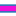
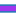

<!doctype html>
<html lang="en">
    <head>
        <meta charset="utf-8">
        <meta http-equiv="X-UA-Compatible" content="IE=edge">
        <meta name="viewport" content="initial-scale=1,user-scalable=no,maximum-scale=1,width=device-width">
        <meta name="mobile-web-app-capable" content="yes">
        <meta name="apple-mobile-web-app-capable" content="yes">
        <link rel="stylesheet" href="css/leaflet.css"><link rel="stylesheet" href="http://maxcdn.bootstrapcdn.com/font-awesome/4.6.1/css/font-awesome.min.css"><link rel="stylesheet" href="css/L.Control.Locate.min.css">
        <link rel="stylesheet" href="css/qgis2web.css">
        <link rel="stylesheet" href="css/leaflet-search.css">
        <style>
        html, body, #map {
            width: 100%;
            height: 100%;
            padding: 0;
            margin: 0;
        }
        </style>
        <title>Safe Routes for Wheelchair Users</title>
    </head>
    <body>
        <div id="map">
        </div>
        <script src="js/qgis2web_expressions.js"></script>
        <script src="js/leaflet.js"></script><script src="js/L.Control.Locate.min.js"></script>
        <script src="js/multi-style-layer.js"></script>
        <script src="js/leaflet.rotatedMarker.js"></script>
        <script src="js/leaflet.pattern.js"></script>
        <script src="js/leaflet-hash.js"></script>
        <script src="js/Autolinker.min.js"></script>
        <script src="js/rbush.min.js"></script>
        <script src="js/labelgun.min.js"></script>
        <script src="js/labels.js"></script>
        <script src="js/leaflet-search.js"></script>
        <script src="data/AccessibleRoutes_0.js"></script>
        <script src="data/AccessiblePoints_1.js"></script>
        <script>
        var map = L.map('map', {
            zoomControl:true, maxZoom:28, minZoom:10
        }).fitBounds([[37.4409792787,24.9402087713],[37.4458875318,24.9506690352]]);
        var hash = new L.Hash(map);
        map.attributionControl.addAttribution('<a href="https://github.com/tomchadwin/qgis2web" target="_blank">qgis2web</a>');
        L.control.locate().addTo(map);
        var bounds_group = new L.featureGroup([]);
        var basemap0 = L.tileLayer('http://{s}.tile.openstreetmap.fr/hot/{z}/{x}/{y}.png', {
            attribution: '&copy; <a href="http://openstreetmap.org">OpenStreetMap</a> contributors,<a href="http://creativecommons.org/licenses/by-sa/2.0/">CC-BY-SA</a>,Tiles courtesy of <a href="http://hot.openstreetmap.org/" target="_blank">Humanitarian OpenStreetMap Team</a>',
            maxZoom: 28
        });
        basemap0.addTo(map);
        function setBounds() {
        }
        function pop_AccessibleRoutes_0(feature, layer) {
            var popupContent = '<table>\
                    <tr>\
                        <td colspan="2">' + (feature.properties['id'] !== null ? Autolinker.link(String(feature.properties['id'])) : '') + '</td>\
                    </tr>\
                    <tr>\
                        <td colspan="2"><strong>Route</strong><br />' + (feature.properties['Route'] !== null ? Autolinker.link(String(feature.properties['Route'])) : '') + '</td>\
                    </tr>\
                    <tr>\
                        <td colspan="2"><strong>Time</strong><br />' + (feature.properties['Time'] !== null ? Autolinker.link(String(feature.properties['Time'])) : '') + '</td>\
                    </tr>\
                    <tr>\
                        <td colspan="2"><strong>Distance</strong><br />' + (feature.properties['Distance'] !== null ? Autolinker.link(String(feature.properties['Distance'])) : '') + '</td>\
                    </tr>\
                </table>';
            layer.bindPopup(popupContent, {maxHeight: 400});
        }

        function style_AccessibleRoutes_0_0(feature) {
            switch(String(feature.properties['id'])) {
                case '1':
                    return {
                pane: 'pane_AccessibleRoutes_0',
                opacity: 1,
                color: 'rgba(31,120,180,1.0)',
                dashArray: '',
                lineCap: 'square',
                lineJoin: 'bevel',
                weight: 8.0,
                fillOpacity: 0,
            }
                    break;
                case '2':
                    return {
                pane: 'pane_AccessibleRoutes_0',
                opacity: 1,
                color: 'rgba(31,120,180,1.0)',
                dashArray: '',
                lineCap: 'square',
                lineJoin: 'bevel',
                weight: 8.0,
                fillOpacity: 0,
            }
                    break;
                case '3':
                    return {
                pane: 'pane_AccessibleRoutes_0',
                opacity: 1,
                color: 'rgba(31,120,180,1.0)',
                dashArray: '',
                lineCap: 'square',
                lineJoin: 'bevel',
                weight: 8.0,
                fillOpacity: 0,
            }
                    break;
                case '4':
                    return {
                pane: 'pane_AccessibleRoutes_0',
                opacity: 1,
                color: 'rgba(31,120,180,1.0)',
                dashArray: '',
                lineCap: 'square',
                lineJoin: 'bevel',
                weight: 8.0,
                fillOpacity: 0,
            }
                    break;
            }
        }
        function style_AccessibleRoutes_0_1(feature) {
            switch(String(feature.properties['id'])) {
                case '1':
                    return {
                pane: 'pane_AccessibleRoutes_0',
                opacity: 1,
                color: 'rgba(241,14,215,1.0)',
                dashArray: '',
                lineCap: 'square',
                lineJoin: 'round',
                weight: 5.0,
                fillOpacity: 0,
            }
                    break;
                case '2':
                    return {
                pane: 'pane_AccessibleRoutes_0',
                opacity: 1,
                color: 'rgba(162,54,238,1.0)',
                dashArray: '',
                lineCap: 'square',
                lineJoin: 'round',
                weight: 5.0,
                fillOpacity: 0,
            }
                    break;
                case '3':
                    return {
                pane: 'pane_AccessibleRoutes_0',
                opacity: 1,
                color: 'rgba(152,17,92,1.0)',
                dashArray: '',
                lineCap: 'square',
                lineJoin: 'round',
                weight: 5.0,
                fillOpacity: 0,
            }
                    break;
                case '4':
                    return {
                pane: 'pane_AccessibleRoutes_0',
                opacity: 1,
                color: 'rgba(245,77,130,1.0)',
                dashArray: '',
                lineCap: 'square',
                lineJoin: 'round',
                weight: 5.0,
                fillOpacity: 0,
            }
                    break;
            }
        }
        map.createPane('pane_AccessibleRoutes_0');
        map.getPane('pane_AccessibleRoutes_0').style.zIndex = 400;
        map.getPane('pane_AccessibleRoutes_0').style['mix-blend-mode'] = 'normal';
        var layer_AccessibleRoutes_0 = new L.geoJson.multiStyle(json_AccessibleRoutes_0, {
            attribution: '<a href=""></a>',
            pane: 'pane_AccessibleRoutes_0',
            onEachFeature: pop_AccessibleRoutes_0,
            styles: [style_AccessibleRoutes_0_0,style_AccessibleRoutes_0_1,]
        });
        bounds_group.addLayer(layer_AccessibleRoutes_0);
        map.addLayer(layer_AccessibleRoutes_0);
        function pop_AccessiblePoints_1(feature, layer) {
            var popupContent = '<table>\
                    <tr>\
                        <td colspan="2">' + (feature.properties['id'] !== null ? Autolinker.link(String(feature.properties['id'])) : '') + '</td>\
                    </tr>\
                    <tr>\
                        <td colspan="2"><strong>Name</strong><br />' + (feature.properties['Name'] !== null ? Autolinker.link(String(feature.properties['Name'])) : '') + '</td>\
                    </tr>\
                </table>';
            layer.bindPopup(popupContent, {maxHeight: 400});
        }

        function style_AccessiblePoints_1_0() {
            return {
                pane: 'pane_AccessiblePoints_1',
                radius: 8.0,
                opacity: 1,
                color: 'rgba(0,0,0,1.0)',
                dashArray: '',
                lineCap: 'butt',
                lineJoin: 'miter',
                weight: 1,
                fill: true,
                fillOpacity: 1,
                fillColor: 'rgba(205,6,159,1.0)',
            }
        }
        map.createPane('pane_AccessiblePoints_1');
        map.getPane('pane_AccessiblePoints_1').style.zIndex = 401;
        map.getPane('pane_AccessiblePoints_1').style['mix-blend-mode'] = 'normal';
        var layer_AccessiblePoints_1 = new L.geoJson(json_AccessiblePoints_1, {
            attribution: '<a href=""></a>',
            pane: 'pane_AccessiblePoints_1',
            onEachFeature: pop_AccessiblePoints_1,
            pointToLayer: function (feature, latlng) {
                var context = {
                    feature: feature,
                    variables: {}
                };
                return L.circleMarker(latlng, style_AccessiblePoints_1_0(feature));
            },
        });
        bounds_group.addLayer(layer_AccessiblePoints_1);
        map.addLayer(layer_AccessiblePoints_1);
        var title = new L.Control();
        title.onAdd = function (map) {
            this._div = L.DomUtil.create('div', 'info');
            this.update();
            return this._div;
        };
        title.update = function () {
            this._div.innerHTML = '<h2>Safe Routes for Wheelchair Users</h2>';
        };
        title.addTo(map);
        var baseMaps = {};
        L.control.layers(baseMaps,{' Accessible Points': layer_AccessiblePoints_1,'Accessible Routes<br /><table><tr><td style="text-align: center;"></td><td>From Syros Port to Town Hall</td></tr><tr><td style="text-align: center;"></td><td>From Accessible Paking Spots to Restaurants and Cafes</td></tr><tr><td style="text-align: center;"></td><td>From Accessible Accommodation to Shopping Centre</td></tr><tr><td style="text-align: center;"></td><td>From Restaurants and Cafes to Apollon Theatre</td></tr></table>': layer_AccessibleRoutes_0,},{collapsed:false}).addTo(map);
        setBounds();
        var i = 0;
        layer_AccessiblePoints_1.eachLayer(function(layer) {
            var context = {
                feature: layer.feature,
                variables: {}
            };
            layer.bindTooltip((layer.feature.properties['Name'] !== null?String('<div style="color: #000000; font-size: 10pt; font-family: \'Stencil\', sans-serif;">' + layer.feature.properties['Name']) + '</div>':''), {permanent: true, offset: [-0, -16], className: 'css_AccessiblePoints_1'});
            labels.push(layer);
            totalMarkers += 1;
              layer.added = true;
              addLabel(layer, i);
              i++;
        });
        map.addControl(new L.Control.Search({
            layer: layer_AccessiblePoints_1,
            initial: false,
            hideMarkerOnCollapse: true,
            propertyName: 'Name'}));
        resetLabels([layer_AccessiblePoints_1]);
        map.on("zoomend", function(){
            resetLabels([layer_AccessiblePoints_1]);
        });
        map.on("layeradd", function(){
            resetLabels([layer_AccessiblePoints_1]);
        });
        map.on("layerremove", function(){
            resetLabels([layer_AccessiblePoints_1]);
        });
        </script>
    </body>
</html>
